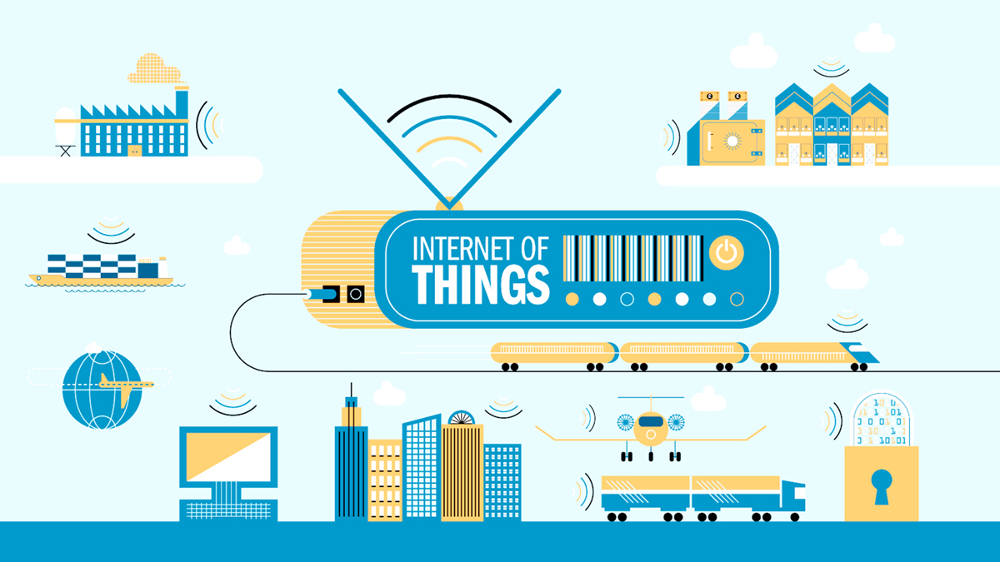

Ngay từ tên gọi của nó, Internet Of Things viết tắt là IOT chính là internet trong mọi thứ. Và theo WikiPedia định nghĩa thì IOT chính là mạng lưới vạn vật kết nối Internet hoặc mạng lưới kết nối thiết bị Internet . Là một kịch bản của thế giới, khi mà mỗi đồ vật, con người được cung cấp một định danh riêng của nó và tất cả có khả năng truyền tải, trao đổi thông tin, dữ liệu qua một mạng duy nhất mà không cần đến sự tương tác trực tiếp giữa người với người, hay người với máy tính.
 Once you're ready to get out of this sample project and edit your own code, you can use the dropdown
in the left sidebar to switch folders. Right now, the dropdown says "Getting Started" - that's the
folder containing the file you're looking at right now. Click on the dropdown and choose "Open Folder…"
to open your own folder.
You can also use the dropdown later to switch back to folders you've opened previously, including this
sample project.
Once you're ready to get out of this sample project and edit your own code, you can use the dropdown
in the left sidebar to switch folders. Right now, the dropdown says "Getting Started" - that's the
folder containing the file you're looking at right now. Click on the dropdown and choose "Open Folder…"
to open your own folder.
You can also use the dropdown later to switch back to folders you've opened previously, including this
sample project.
Khi mà vạn vật đều có chung một mạng kết nối thì việc liên lạc và làm việc trở nên rất dễ dàng. Con người có thể hiện thực hóa mục đích của mình trong tương lai. Chúng ta hoàn toàn có thể kiểm soát mọi thứ. Giả sử 1 chiếc ví mà các bạn đang sử dụng có tích hợp công nghệ IOT. Chúng có nhiệm vụ kiểm tra số lượng tiền trong ví, kiểm tra ngày hết hạn của các giấy tờ mà các bạn để trong đó như: bảo hiểm y tế, hạn nộp học phí,.. và thông báo tình trạng của nó đến cho chúng ta biết thông qua các ứng dụng tin nhắn SMS, facebook, skype,...

Hay như một hệ thống tưới nước tự động cây cối trong gia đình bạn được tích hợp công nghệ IOT. Giúp bạn điều khiển qui trình chăm sóc cây, tưới nước cây, thậm chí là bắt sâu bọ,…khi bạn có chuyến đi công tác xa vài ngày hay vài tháng mà không thể thực hiện được các chức năng đó. Điều đó sẽ trở nên rất đơn giải khi giả sử mà hệ thống tưới cây tự động và điện thoại hoặc laptop, PC,.. của bạn được kết nối và mạng lưới Internet và qua đó có thể trao đổi thông tin cũng như thực thi các câu lệnh mà bạn mong muốn.
Lấy ví dụ hệ thống tưới nước cây tự động như ở trên thì hệ thống sinh thái của chúng ta phải được gắn 1 bộ cảm biến dùng để nhận biết các yếu tố như: nhiệt độ, lượng nước, độ ẩm, thời tiết,… Sau đó được chuyển thành dữ liệu và các dữ liệu này được sử dụng và được thiết lập các thiết lập các chế độ theo mục đích sử dụng. Và qui trình này sẽ kết nối và hoạt động trong môi trường Internet để thông báo và tạo giao diện đến người dùng.
Điều đó thật mới mẻ và tiện dụng phải không nào ? Chúng ta có thể tiết kiệm được rất nhiều thời gian cũng như tránh gặp phải những trường hợp khó khăn khi không làm chủ và quản lý được tất cả mọi vật xung quanh ta.
Want to see it in action? Place your cursor on the tag above and press Cmd/Ctrl + E. You should see a CSS quick editor appear above, showing the CSS rule that applies to it. Quick Edit works in class and id attributes as well. You can use it with your LESS and SCSS files also. You can create new rules the same way. Click in one of the tags above and press Cmd/Ctrl + E. There are no rules for it right now, but you can click the New Rule button to add a new rule for .Điều kì diệu ở đây đó chính là cảm biến. Các thiết bị cần kết nối phải được tích hợp một chip cảm biến để có thể chuyển đổi, phát hiện các hiện tượng trong môi trường tự nhiên và biến nó thành dữ liệu trong môi trường Internet để xử lý dữ liệu và tiến hành thực thi các điều hướng trong mạng Internet đó theo cách mà người dùng mong muốn.
If you have Google Chrome installed, you can try this out yourself. Click on the lightning bolt icon in the top right corner of your Brackets window or hit Cmd/Ctrl + Alt + P. When Live Preview is enabled on an HTML document, all linked CSS documents can be edited in real-time. The icon will change from gray to gold when Brackets establishes a connection to your browser. Now, place your cursor on the tag above. Notice the blue highlight that appears around the image in Chrome. Next, use Cmd/Ctrl + E to open up the defined CSS rules. Try changing the size of the border from 10px to 20px or change the background color from "transparent" to "hotpink". If you have Brackets and your browser running side-by-side, you will see your changes instantly reflected in your browser. Cool, right? To try out Quick View for yourself, place your cursor on the tag at the top of this document and press Cmd/Ctrl + E to open a CSS quick editor. Now simply hover over any of the color values within the CSS. You can also see it in action on gradients by opening a CSS quick editor on the tag and hovering over any of the background image values. To try out the image preview, place your cursor over the screenshot image included earlier in this document.
Internet Of Things ngày này đang phát triển một cách vô cùng mạnh mẽ. Vạn vật xung quanh chúng ta không còn là những vật dụng vô tri vô giác mà phần nào sẽ trở thành người bạn đồng hành và giúp ích cho chúng ta trong cuộc sống hiện tại cũng như trong tương lai. Bởi cuộc sống là sự sáng tạo và phát triển không ngừng!